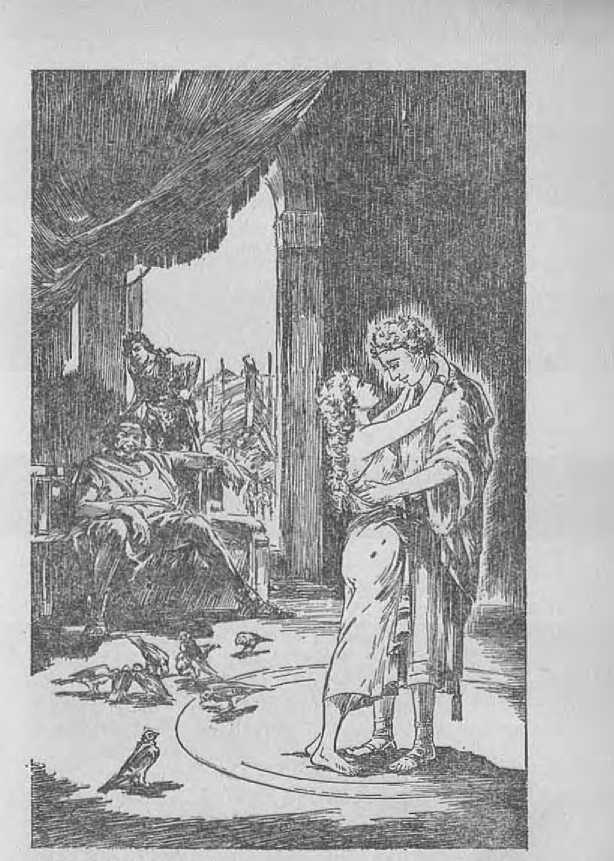
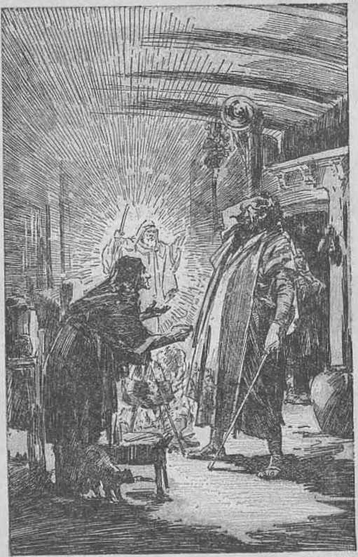

A Bible Treatise
by
J. F. RUTHERFORD
CopyriOTitKo 1934 and Published be WATCH TOWER BIBLE AND TRACT SOCIETY International Bible Students Association Brooklyn, N. ¥., U. S. A. Mode in the United States of America
Branch Offices :
London, Magdeburg, Paris, Toronto, StrnthCeld, Cape Town, Berne, Copenhagen, Stockholm, and other cities.
MANY sincere persons have greatly desired to have a correct understanding of the Scriptures concerning the angels. These are among the questions often asked:
Are the angels good or bad?
Who are the “sons of God”, the nephi-lim, and the “men of renown” mentioned i in the sixth chapter of Genesis?
What became of the angels that sinned in Noah’s day?
If the angels that sinned in Noah’s day were destroyed by the flood, to what angels did Jesus preach following his crucifixion, and how did he preach to them?
< 'mi num and women now on earth .......mimii'nln with the angels?
Wind in Ihn explanation concerning II....... alm rhuiii In hi' aide io talk with
Hi. ii Iio mil v Im have died?
Thin lumldi'l given I he S<'t ipl ii rid and llmi' ioi" tin him mid nidinlying answer Io llm I'nf'rgiiiiig mid ri'liih'd questions. You ilmiild rend il cnrei'iilly together villi llm Bible texlb riled therein.
"For we wrestle not against flesh and blood, but against principalities, against powers, against the rulers of the darkness of this world, against spiritual wickedness in high places.”—Ephesians fi: 12,
JEHOVAH GOD, the Creator of heaven and earth, is the Creator of all things good. He has never created a wicked thing, because he is holy and all his works are perfect. (Deuteronomy 32: 4) The wicked arc those who willfully violate God’s law. When a creature becomes wicked, the responsibility for so doing cannot be laid to Jehovah. If the creature yields to sinful temptation or influence and turns to wickedness, that cannot be charged to God, for the reason, it is written, that God tempts no man. (James 1:13) All the ways of Jehovah God are right and righteous. God hates wickedness, and he lias definitely fixed the destiny of the wicked. “The transgressors shall be destroyed together; the end of the wicked shall be cut off.” (Psalm 37: 38) • There are wicked spirit creatures and wicked human creatures, and the end of all such is destruction. (Psalm 145: 20) Angels are spirit creatures, whom Jehovah God created perfect, pure and holy, and all such as have willfully followed the Devil have become wicked, While the judgment of Jehovah plainly shows that I he wicked shall suffer destruction, that does not mean that the creature is destroyed as soon as s
or even within a short time after he becomes wicked. Satan is a wicked spirit long ago adjudged guilty and sentenced to death, but God has permitted him to remain for a certain purpose. The Scriptures also show that there are other spirit creatures long ago condemned by the judgment of Jehovah God for destruction hut who are permitted to live until God’s due time to execute them. Such wicked angels have exercised power and influence over man and continue to do so. Following the birth of the “man child” there was a great war in heaven in which Satan and other wicked angels fought on one side against the Lord Jesus Christ, and all such wicked ones were cast down to the earth. In this connection it is written: “Woe to the inhabiters of I he earth, and of the sea 1 for the devil is come down unto you, having great wrath, because he knoweth that he ha th but a short time."—Revelation 12: 5-12.
That Sal an and his wicked angels at the present time do exorcise great influence over the rulers of the earlli and bring much woe upon the people there cannot be the slightest doubt, since the evidence is abundant on every hand. Many . persons consult these wicked spirit creatures, being entirely ignorant of their origin, what is their purpose, and what will be their end. The men and women who do consult them through mediums are induced by the seductive influence to indulge in many wrongful practices to the reproach of Jehovah’s name. Heretofore much has been said and written about wicked angels and their power over men, but now, in the day when
the Lord has gathered his faithful ones unto himself, and inaugurated toward them the new covenant, and brought them into the covenant for the kingdom, it should he expected the Lord in his loving-kindness would give to his faithful ones greater light concerning the wicked angels, opening to these faithful ones a better understanding of the Scriptures. We must keep in mind the fact that the apostle authoritatively wrote: “For whatsoever things were written aforetime were written for our learning, that we through patience and comfort of the scriptures might have hope.” (Romans 15 :4) Therefore it must follow that a proper understanding of these scriptures concerning the wicked angels would be helpful to the remnant at the present time. They must understand, if they are to aid the Jonadab company to have a better understanding. Tn addition thereto God by his apostle makes it clear to the faithful remnant that they are continually assaulted by this horde or host of wicked ones and that they must put on and keep on the armor of protection which Jehovah in his loving-kindness provided for them.
EPITOME
Both Jude and Peter tell of angels that became wicked and are reserved for destruction. Peter also speaks of certain “'spirits in prison”, to which Jesus preached. Who are these wicked angels? When and how did they become wicked ? Who are the ones to whom Jesus preached? and are the ones in prison the same as the ones who are reserved for the judgment of destruction?
What is the present state of habitation of these wicked ones? It seems that it would be profitable in the consideration of these questions to first set out a brief epitome or abstract of what follows and then try to set forth the Scriptural argument in support of the same; hence the following :
There arc two separate and distinct classes of angels or spirits mentioned in the sixth chapter of Genesis, One of these classes is designated in the Authorised Version as "giants”; in the Revised Version as nephilim (verse4). Nephilim, means "fellers”, bullies or tyrants. Those wicked ones joined Satan in his rebellion and have operated with him since in his wicked endeavors to reproach Jehovah God and to turn all creation away froin God. They are the ones mentioned at 2 Peter 2:4 and Jude 6. They have fought since the days of Eden against those who have tried to be righteous. They are alive and are the mortal enemies of the saints. They will fight on Satan's side in the battle of Armageddon and suffer complete defeat.
In the second verse of the sixth chapter of Genesis are mentioned “the sons of God”. These arc angels that were once holy and in the service of Jehovah God but did not join Satan in his rebellion, hut afterwards yielded to his subtle and wicked influence, became disobedient, resulting in their losing the privilege and opportunity of serving Jehovah, and have since been imprisoned ; they are alive and are the ones mentioned in 1 Peter 3:19, 20; and there is some hope of their recovery.
In considering the scriptures hereinafter discussed it will be well and profitable to keep in mind the two separate and distinct classes of angels above mentioned and their relation to each other and to the human race. The remnant and the Jonadab class will both find this matter of peculiar interest at the present time. It is undoubtedly the will of God that a witness concerning these unseen powers and the influence that they exercise over the human race must now he given, and that all who love the Lord must put forth their best endeavors to have a part in this witness work.
THE REBELLION
Lucifer, at the fime of the creation of man, was a member of God’s organization, appointed and anointed to office. It was his privilege and duty to serve, support and praise Jehovah and render complete obedience to him, and he was fully equipped for that purpose. It is written that Jehovah said of Lucifer: “Thou art the anointed cherub that covercth; and I have set thee so: thou wast upon the holy mountain of God.” (Ezekiel 28:14) This is proof that Lucifer was a part of Jehovah’s organization and appointed and anointed to perform certain duties. It seems quite clear from the Scriptures that Lucifer was the chief officer over a certain division of God’s organization, having under him other spirit creatures or angels, and that his organization particularly related to man on the earth. Lucifer rebelled against God and corrupted his sanctuaries “by the multitude of thine iniquities, in the unrighteousness of thy traffic, thou hast profaned thy sanctuaries”. (Ezekiel 28:18, American Revised Version) That would mean that at the beginning of his official term his organization or dwelling-place was devoted to God and righteousness, but that lie willfully became wicked. Tliis would also mean that others joined him in his treasonable course, thus corrupting the dwelling-place of Satan and those in his immediate organization. That Satan has a company of angels that operate with him other scriptures quite clearly prove. That company of wicked angels fought with Satan at the time Christ Jesus cast Satan and his host out of heaven and down to the earth, and their operations are now confined to things pertaining to the earth. (Revelation 12: 9-12) At the beginning they were creatures of God, but they rebelled and became the ‘seed of the Serpent’, Satan. The Lord Jesus Christ announces Jehovah’s judgment concerning this wicked company led by Satan. (Matthew 25: 41) Satan is tyrannical in the extreme, and those spirits operating with him are wicked tyrants. From the time of Eden Satan was a murderer, and those who joined him in his rebellion against God doubtless participated in tin; murder of Abel, and they are also murderers and have continued to commit murder since.—John 8:44.
God by his prophet Daniel describes Satan’s wicked organization under the symbol of a terrible image. The head of that image was of gold, picturing Satan himself and showing that he originally received his authority from Jehovah.
The breast and arms of that image were silver, picturing the princes or assistant rulers under Satan and who form a part of his invisible organization that is wicked; and as it is written that there is “another third kingdom”, of copper, “which shall bear rule over all the earth” (Daniel 2: 31-39), this statement of Daniel, and which is corroborated by other scriptures, proves conclusively that the wicked angels under Satan have had dominion or rule over the governments of the earth from the beginning and have exercised the same in a tyrannical manner. The Scriptures make it clear that Satan is the god' or invisible ruler of this world; which means that he is the most power ful among all the wicked spirit creatures and that the other wicked ones operate under liini, and that the entire organization fights against every one who is on the side of Jehovah.—2 Corinthians 4:3, 4: Ephesians 6:12.
Among those of his wicked organization is the one termed by the Scriptures ‘‘Gog”, Satan’s chief officer, whom doubtless he appointed to correspond to Christ Jesus as the chief officer of Jehovah. This host of wicked ones occupied a place known in the Scriptures as Magog. (Ezekiel 38:2-6) (See Vindication, Book Two, page 311.) Jesus referred to Satan as the “prince f or invisible ruler] of this world”. (John 14:30) Since Satan is called Beelzebub, which means prince or chief one of devils, it follows that there are many other like ones, that is to say, wicked angels or spirits.—Matthew 10:25; 12:24; Mark 3:22; Luke 11:15,18,19.
These texts here cited, togetherwith the words of Ephesians 6:10-12, prove beyond all doubt that there is a, host of wicked angels or spirit creatures; that Satan the Devil is the chief one of that wicked company; and that all of such are the enemies of God and the mortal enemies of every one who seeks to do God’s will.
From the very time of Eden God pronounced his judgment of destruction against Satan and highest or "seed”. (Genesis3:15) Later through his prophet Moses God tells why he did not immediately execute that judgment and destroy Satan and all of his wicked host. His purpose is to permit Satan and his host to go the very limit in opposition to God and in their effort to turn all creation from Jehovah and to prove Jehovah to be a liar; and then in his own due time God will completely destroy such wicked ones and thus demonstrate his own supreme power. Before their destruction, however, Jehovah will have his faithful and loyal witnesses give testimony to his own great name and to be witnesses before both men and angels. In proof of God's purpose it is written concerning Satan : “But for this cause have I allowed thee to remain, in order to show thee my power; and in order th.at they [my witnesses] may proclaim my name throughout all the earth.” (Exodus 9:16, Leeser) It is Satan and his wicked host, invisible to human eyes, that have wrongfully influenced and corrupted the visible rulers of the earth and made the ruling powers of the earth a part of the wicked organization that oppresses the human race. This visible part of Satan’s organization is pictured by the prophet Daniel as the "legs of iron” and the cfeet of iron and clay’. (Daniel 2:33) The entire organization under Satan is pitted against Jehovah God; and in due time "the stone”, meaning Christ Jesus, who is made the head of Jehovah’s capital organization and his chief executive officer, will completely destroy that wicked organization of Satan, both visible and invisible.—Daniel 2: 44, 45.
From the day of the rebellion in Eden until now it has been the Devil and his host that have opposed God and all who have become a part of God’s organization; and the time for a final show-down between the hosts of wickedness and God’s righteous organization is now at hand, and hence it is to be expected that Jehovah would give his faithful saints on earth a clearer vision of the matter than they have had at any previous time. It is certain that Satan and his host would long ago have destroyed all who have put themselves on the side of Jehovah, had not God exercised his power in behalf of those who love him; and thus he has held back the wicked ones, restraining them and preventing the destruction of his faithful witnesses. It was that same wicked crowd that persecuted Jesus when on earth and brought about his death, which Jehovah permitted; but at the same time he completely thwarted the purpose of the enemy by raising Jesus out of the death and giving him the highest place in his own great organization. -—Philippians 2: 9-11.
“SONS OF GOD”
Iii Jehovah’s universal organization there were many holy angels devoted to his service and who were never a part of Lucifer’s company, and who did not participate with Lucifer in his rebellion. AU of such faithful angels are the “sons of God”, because they received their life from Jehovah. (Job 33: 7) Approximately 1,500 years had passed since the rebellion in Eden. Adam and Eve in that time had children and grandchildren, and the human race was continuously on the increase; and here begins the account concerning the debauchery of the human race. “And it came to pass, when men began to multiply on the face of the earth, and daughters were born unto them, that the sons of God saw the daughters of men that they were fair; and they took them wives of all which they chose.” (Genesis 6:1, 2) It will be observed that the second verse above quoted says nothing about wickedness of the angels, the “sons of God”, nor that such “sons of God” were wicked at the time they materialized as men. It could not be said I hat the ones here called “the sons of God” were any part of Satan’s organization at that time, if ever. All who had allied themselves with Satan the Devil were then, and are, 'the seed of Satan the Serpent,’ and hence the sons of Satan. This is proof that the ones here caUed the “sons of God” are entirely a different class or company from the ones that joined Satan in his rebellion. The fact that 1,500 years after the rebellion angels were called the “sons of God” shows that they had been all of that time serving Jehovah God. They were spirit creatures or angels having life from Jehovah God, and, continuing in his service, they are designated as “the sons of God”.
The chief objective of Satan from and after his rebellion was and has been and still is to turn all creation against Jehovah.'There is nothing said in the record about the ones mentioned above as “the sons of God” as making any attempt to turn others away from Jehovah God. The Scriptures show that Satan is a sly, wily and seductive foe. His name Serpent discloses that he is the arch deceiver amongst all creatures, and his name Satan clearly moans that be uses deception in his work of opposing Jehovah. We know that the Devil uses deception and fraud to entrap the human creatures who become negligent of their duty toward God, and it is entirely reasonable that Satan employed a likemanner of fraud and deceit in turning the spirit “sons of God” away from the Creator., It was a part of his wicked scheme to defraud angels as well as mon and to induce them to go contrary to God's law. 'The daughters of men wore fair,’ and the “sons of God” saw these and observed that they were attractive. By fraud and deceit Satan first entrapped the beautiful Eve, which furnished Adam an excuse to join the Devil; and now 1,500 years thereafter he uses the beautiful daughters or granddaughters of Eve to entrap others, even the “sons of God”. Those angelic “sons of God” had power to materialize in a human organism, and doubtless did materialize. There is no evidence thgt by materializing they violated God's law, because the Scriptures show that long after this, in the days of Abraham, angels materialized and appeared as men. (Genesis .19:1,15; 18:1-15) While they did not materialize at the command of Jehovah, nor were they sent as his messengers, yet their sin does not appear to be that of materialization. Appearing in human form they wool ’ necessarily be handsome and attractive men that would be pleasing to the women of that time. The Scriptures do not say that they were giants, and it would not be at all reasonable to conclude that they materialized as giants, but that they materialized as attractive men. “The sons of God . . . took them wives of all which they chose.” The result of this marital relationship between the "sons of God” and the daughters of men resulted in greatly increased wickedness amongst the human race, and this of itself is conclusive proof that Satan was the prime mover in bringing about this condition.
WICKEDNESS
Adam became a wicked man, and at the end of 1,500 years almost all of the offspring of Adam had become wicked and brought reproach upon Jehovah’s name and vexed him. Abel, Enoch and Noah are the only ones mentioned up to this time as having maintained their integrity toward God. It appears that probably all mankind had turned away from God at the time here mentioned, except Noah and the immediate members of his household. Noah had been on the earth for several hundred y^prs; hence the account here in Genesis was "in the days of Noah”. The inference must be drawn that wickedness had continued to increase amongst men. "And Jehovah said, My Spirit shall not strive with man for ever, for that lie also is flesh: yet shall his days be a hundred and twenty years.” (Genesis 6: 3, A.R.V.) The words here used, "My Spirit,” mean Jehovah himself, that being another way of saying “I the Spirit”. If, however, the pronoun 'T’ had been used it would not have set off so forcefully the tremendous contrast between "Spirit” the Creator and “flesh”, that is, human creatures. Jehovah is The Spirit, the Almighty; and man, being flesh, is vastly weaker and inferior to Jehovah. Since Adam had become a sinner, Jehovah had been striving with humankind, and very few of them had maintained their integrity toward God. It appeared that Satan was succeeding admirably in turning the human race away from Jehovah.
The Hebrew for the English word “strive” is doon and is a primitive root meaning "to rule”, and, by implication, “to judge” (as an umpire); also "to strive” or do as adversaries do at law or in litigation. During all those fifteen centuries Jehovah had been judging men as to their integrity. From Adam to Noah inclusive was ten generations of men, symbolic of earthly completeness; and in all that time, as the divine record discloses, Noah was the third man to prove his integrity toward God, Abel and Enoch being the two other men. There was no need for Jehovah to prolong the controversy for ever as though man could continue to strive with his
Creator and Judge in the same manner that he strives against an adversary at law. Since the time of Enos men had been ‘calling themselves by the name of the Lord’, but manifestly that was done for the purpose of bringing reproach upon God’s name, in the same manner as many men today call themselves Christians but openly bring reproach upon the name of God and Christ. It is quite evident that, since the marriage of the "sons of God” with the daughters of men, wickedness had increased, and hence the statement by the great Spirit, “My Spirit shall not always strive with man, for that he also is flesh.” Flesh, or human creatures, was not holding integrity toward God. God’s announcement is, in effect, that flesh is not to forever insult the name of Jehovah. In contrast between Jehovah and creatures it is written: “Now the Egyptians are men, and not God,” and they also are “flesh, and not spirit”. “All flesh is grass.” (Isaiah 31:3; 40:6) Man could not therefore go on for ever mocking God the great Spirit. Provoking God shows that man did not have the correct appreciation of what man is as compared with the great Creator.
The presumption is that the fathers of the daughters consented to their daughters’ marrying the materialized spirit creatures, reasoning that such a course would make the human race great as compared with God and give them a better standing with the Almighty. It would be the Devil that would instill just such a thought into the minds of men, his purpose being to mock God and bring reproach upon his name. Such a
Sons of God Took Wives
Page 14
course of action was abominable in the sight of Jehovah, because it was gross wickedness. Says Jehovah through his prophet: “The grass with-ereth, the flower fadeth: because the Spirit of the Lord bloweth upon it: surely the people is grass. The grass withereth, the flower fadeth: but the word of our God shall stand for ever.” —Isaiah 40: 7, 8.
'Why should Jehovah God, the Spirit, always strive with man and permit man to reproach his name ? In substance God here says: T am Spirit, and man is flesh; and I can instantly blot him out of existence; yet his days [of grace, Lecserj shall be one hundred and twenty years.’ This seems clearly to say, in substance, that for fifteen centuries man had been out of harmony with his Creator, yet now God would suffer or permit man to go on another one hundred and twenty years before he would bring about the destruction of the human race. That statement concerning the hundred and twenty years referred to wicked men, and not to Noah, because Noah, who was then alive and walking with God, continued to live on earth for 350 years after the flood. Why, then, should God suffer sinful man with no integrity toward Jehovah to continue 120 years longer? Manifestly for the same reason that Jehovah permitted Pharaoh, as a special representative of the Devil himself, to remain for a time, and for the same reason that God has permitted the Devil to continue until now; that is to say, that ’‘Jehovah might exhibit his power and cause a witness to be given in the earth to his name’, (Exodus 9:16, Leese)) It was during that 120years that Jehovah did cause a great witness to he given to his name, and at the end of that. 120 years he brought about the complete destruction of the world, which destruction foreshadows the destruction of the world at Armageddon. In this manner Jehovah shows that he had timed the destruction of the world by the flood of waters and that he would allow ample time before that destruction to serve notice on mon and on their superhuman sons-in-law, the incarnated “sons of God'’. Tn that day before the flood men lived for many years, and .120 years could easily he allowed by the Lord before bringing upon the world the execution of his judgment and still include the generation then living nt the time of this expression of his determination to destroy the world. The 120 years here mentioned in no way whatsoever fixes the age limit of man, nor did the matter have anything to do with the length of time Moses lived; but rather the 120 years here mentioned definitely fixed the time when God would bring the flood upon the earth. It. appears from the record that the declaration of Jehovah concerning the 120 years of further grace was made before Noah was 500 years old and before he begat his three sons.—Genesis 6: 9, 10.
It has been said that the nephilim in the earth ■were the same as the “mighty men” and that these were destroyed in the flood. Thore is no Scriptural support for such a conclusion. The scripture is definite that it was “the sons of God” that took them wives from the daughters of men, and this statement is conclusive proof that the nephilim were not the ones who married the daughters of men. The nephilim, being giants, would have been entirely out of proportion in size to have human creatures for wives. That the nephilim did materialize as human creatures there is no doubt, because the Scriptures say they were in the earth. Doubtless the nephilim were the very ones who, together with Satan, induced the "sons of God” to leave their proper place in the service of Jehovah and seek pleasure with the daughters of men, and this they did to turn those "sons of God” away from Jehovah that they might receive the disapproval of Jehovah and at the same time bring greater reproach upon his name. These "giants” or nephilim materialized and were on the earth, but “the sons of God” married the daughters of men, and this the record clearly shows, to wit: "There were giants in the earth in those days; and also after that, when the sons of God came in unto the daughters of men, and they bare children to them, the same became mighty men, which were of old, men of renown.” (Genesis 6:4) It was after those giants first appeared on earth that the "sons of God” and the daughters of men had children, as shown by this text. These "giants” or nephilim were probably called "fallen ones” or ‘fallen angels’ because they had fallen entirely away from God, and for the further reason that they were "fellers” or ones who fell upon others and treated them in a tyrannical manner. According to a recognized authority, "nephilim” means those who fall (upon others), that is, “fel-* lers.” (Strong) Without a doubt Gog was among that crowd of wicked spirits or nephilim, and this lends support to the conclusion that Gog may yet materialize in human form and lead the visible forces of the Devil in an assault upon God’s organization. (Vindication, Book Two, page 311) It is certain that the nephilim are not the same as the “sons of God” mentioned in the Genesis account, for at least two reasons: (1) they were on the earth before the materialization of the "sons of God”; and (2) these nephilim or giants were not the sons of God, but the seed or sons of the Devil. Other scriptures hereinafter considered fully support this conclusion. By the marriage of the "sons of God” with the daughters of men, children were born, and "the same became mighty men, which were of old, men of renown”. Those "men of renown”, the offspring of the "sons of God”, were not called nephilim, hut are termed, according to the Hebrew text, gibborim. In the great deluge that came upon the earth the gibborim or "mighty men” were destroyed, but there is no Scriptural evidence that either the "sons of God” or the nephilim, described in the Genesis account, were destroyed. On the contrary, the evidence shows that they are yet alive.
It may be suggested that there were nephilim on the earth after the flood, because the spies returning from Canaan reported that they saw giants (neiihilim): "And there we saw the Nephilim, the sons of Anak, who come of the Nephilim: and we were in our own sight as grasshoppers, and so we were in their sight.” (Numbers 13: 33, A.R.F.) But the answer to that is this: The word nephilim means “giants” or “tyrants”, and it is expressly stated in this scripture that the giants who were there seen were the sons of Anak (meaning “long-necked”; hence a giant). Anak was a human creature; but this could not refer to the same class of giants or nephili in as mentioned in the Genesis account. The nephilim who materialized on the earth before the tlood are not said to be sons of any man, which, of course, they could not have been, since they were materialized spirits. The giants seen in Canaan were human creatures, and Caleb drove them out of Hebron.—Joshua 15:13, 14.
The nephilim mentioned in the Genesis account were a part of the Devil’s organization that had operated with him since the rebellion. By materializing as human creatures they would induce the “sons of God”, mentioned in Genesis 6: 2, who had up to that time been loyal to Jehovah, to materialize and to indulge in marital relationship with the daughters of men. These spirit creatures, “the sons of God,” having previously been in Jehovah's service, now by taking human wives and having children by them thus left their proper service of Jehovah in heaven, probably at the time not willfully intending to he disloyal to God, but being induced to believe that they could render a service to man and help him up and at the same time do this to the glory of God. "While the Genesis record is silent as to whether or not God prohibited them from marrying human wives, yet God’s law later on given to the Israelites shows that such a course was contrary to his will.—Leviticus 19:19; 20:15,16.
In Jude it is written: ‘'The angels which kept not their first estate [principality, margin], but left their own habitation [their proper dwelling (place), Roth.], he hath reserved in everlasting chains, under darkness, unto the judgment of the great day.” (Jude 6) This scripture has heretofore been applied to the conduct of tho "sons of God” mentioned in Genesis 6:2; yet other scriptures relating thereto show that such a conclusion is not supported. The words of Jude clearly apply to the nephilim, and not to the “sons of God”, that, is to say, to those giants that, materialized on earth and who are a part of Satan’s organization from the time of the rebellion. It is the nephilim that are included in the judgment of Jehovah for destruction, together with Satan, because they are Satan’s angels and are a part of his organization.
The mere fact that the “sons of God”, after they had materialized, intermarried with human women would not moan that they were directly a part of Satan’s organization or that they were even in sympathy with Satan’s organization. Satan and his allies, the nephilim, would cause these “sons of God” to indulge in false reasoning which led them into an unwise course, bringing them into difficulties like unto that mentioned by the apostle Paul concerning men who leave the service of God and take wives: “But he that is married careth for the things that are of the world, how he may please his wife. And this I speak for your own profit; not that I may cast a snare upon you, but for that which is comely, and that ye may attend upon the Lord without distraction. So then, he that giveth her in marriage doeth well; but he that giveth her not in marriage doeth better,” (1 Corinthians 7:33, 35, 38) “The sons of God” would not be at liberty to marry human wives, because that would take them away from God’s service, but falling to the subtle influence and false reasoning of Satan they doubtless adopted a line of reasoning like that of the “great multitude” (Revelation 7: 9-17) or “prisoner” class (Isaiah 42: 6, 7; 49: 9; 61:1), who reason that they can mix with the world and at the same time serve God. Many men and women have consecrated their lives to God and have, contrary to his will, mixed up ■with the world, reasoning that they could do so and at the same time serve God and uplift the world; but such a course does not result in uplifting the world and does no honor to Jehovah, and this same class he has designated as “prisoners” because they are held in restraint by having mixed up with the world. (Psalms 79:11; 142:7) Doubtless the “sons of God” were induced by Satan to reason along the same line; thus they were entrapped. In the days of Noah the human race was very wicked, even as there is now great wickedness upon the earth. The “prisoner” or “great multitude” class now reason that they can disregard God’s Word of truth and stay in the religious systems, which are a part of the Devil's organization, and thus serve God and man. These are described by the Lord in Psalm 107:10-20. Satan, working through his earthly agents, is the one who gets the “great multitude” into this trap; and this supports the conclusion that it was Satan and his materialized allies or agents, the nephilim, that induced the “sons of God” to take the wrong course and fall into Satan’s trap.
The children horn to the human women and the "sons of God” are called in the Scriptures "mighty men” in the time of the old world before the flood. The same word is used to describe Nimrod, who was said to be a "mighty” (gibbar, Hebrew; powerful) man before the Lord. (Genesis 10:8, 9) These offspring of the union of the daughters of men with the "sons of God” became "men of renown” amongst men, but clearly not before the Lord, for the reason that the Bible account has not preserved the names of any of these men of renown; hence they were not renowned before Jehovah. They had no integrity toward God, but were abominable in his sight, being both mongrels and monstrosities, who made names for themselves because of their wickedness. In like manner Nimrod became famous amongst men. That mongrel race, called "men of renown”, were not nephilim, as the record clearly shows, and, being mongrels and monstrosities, they could not produce their kind.
The Genesis record docs not definitely mention the wickedness of the nephilim, for the manifest reason they wore desperately wicked from the time of the rebellion at Eden and, were under judgment from that time forward. 'Be it also noted that the divine record does not mention the wickedness of the “sons of God” but does emphasize the wickedness of man. “And God saw that the wickedness of man was great in the earth, and that every imagination of the thoughts of his lieart was only evil continually.” (Genesis 6: 5) Satan, following his fixed policy, had turned man away from God and had used men and their daughters to corrupt the "sons of God”, who for a long time had been loyal, and the 'wickedness on the earth’ mentioned is specifically applied to man, and it was concerning man that the Lord said he would not longer strive with him. Jehovah cites this wickedness as a reason for his change of course of action toward men. It was the human race that the Devil had turned away from Jehovah, and now Satan executes his wicked scheme by using human creatures to entrap spirit creatures and turn them away from Jehovah and get them out of his organization.
Because of this great wickedness amongst flesh creatures it is written: “And it repented the Lord that he had made man on the earth, and it grieved him at his heart.” (Genesis 6: 6) The Hebrew word here for “repent” is also translated as follows: “Be comforted, receive comfort, comfort, ease (oneself).” For example, note the following scriptures: “Therefore saith the Lord, the Lord of hosts, the mighty One of Israel, Ah, I will ease me of mine adversaries, and avenge me of mine enemies.” (Isaiah 1:24) “Thus shall mine anger be accomplished, and I will cause my fury to rest upon them, and I mil be comforted: and they shall know that I the Lord have spoken it in my zeal, when I have accomplished my fury in them.”—Ezekiel 5:13.
This does not mean that God regretted that he had made the earth and made man upon it. There would have been no necessity for regrets, because he could have destroyed Satan and Adam at the very moment of the rebellion. Jehovah himself being wholly devoted to righteousness, it grieved him at heart that man had taken the wicked course; henee God’s heart needed to be eased or comforted and would receive it, not from what some creature might do, but from his own course of action toward those who had brought reproach upon his name. His decision was to avenge or vindicate his name, and this he would do by the destruction of those who had united with Satan’s organization and had willfully reproached his name.
Satan and his wicked allies had misused and perverted the lower animals of the earth, instilling in them the devilish spirit, and God declared his purpose to destroy both man and beast. "And the Lord said, I will destroy man, whom I have created, from the face of the earth; both man, and beast, and the creeping thing, and the fowls of the air; for it repenteth me that I have made them.”—Genesis 6: 7.
The words “destroy” and "created” here used are in complete contrast and disclose the meaning of God’s repentance, that is to say, that God the Creator, who had extended his loving-kindness toward his creatures, now turned to Destroyer of both man and beast that had been turned by the Devil into wickedness. Thus God changed his course, or repented, the word "repented” meaning "to change his course of action”. Be it noted that no mention is here made of the nephilun or of the "sons of God”, which shows that their case is to be dealt with by Jehovah elsewhere. That which is here said with reference to destruction applies to the things on the earth, and Noah was the exception. "But Noah found grace in the eyes of the Lord.” (Genesis 6:8) If the word "repented”, as here used, means that God had made a mistake in making man, then why preserve Noah"? Jehovah here shows that his purpose is ultimately to destroy all the willfully wicked, and shows that his favor is given only to those who are obedient to him. "Surely he scorneth the scorn-ers; hut he giveth grace unto the lowly.” (Proverbs 3:34) “Be clothed with humility: for God resisteth the proud, and giveth grace to the humble.”—1 Peter 5:5.
God having decreed according to the Genesis account that 120 years should elapse before he would destroy the creation on earth, and Noah having obtained favor in God’s sight, God then gave to Noah a good woman for a. wi fe, and during the last 100 years before the flood she bore Noah three sons. "The earth also was corrupt before God, and the earth was filled with violence. And God looked upon the earth, and, behold, it was corrupt; for all flesh had corrupted his wa.y upon the earth.”—Genesis 6: 8-12.
Men on earth, with the exception of Noah and his household, were extremely wicked, corrupt, and filled the earth with violence, which condition was hateful to God. "Him that loveth violence, his soul hateth.” (Psalm 11.: 5; Ezekiel 7: 10,11; 8:17) Note that the text says: "All flesh had corrupted his way upon the earth.” This does not say, nor does it mean, that man had corrupted his nature, but his way.
The time having come for God to execute his vengeance upon the wicked- ones, he made Noah Ins witness and directed him to bear testimony to others, and this foreshadowed how’ God at the present time sends forth his anointed to bear witness to his name and his purpose before he brings destruction upon Satan’s organization. The fact that God did not even mention the nephilim and the “sons of God” in this decree o f destruction, but confined it to “all flesh”, shows that man himself is responsible for his wicked course willfully taken. “And God said unto Noah, The end of all flesh is come before me; for the earth is filled with violence through them : and, behold, I will destroy them with the earth.” (Genesis 6:13) This would bring an end to the long period of Jehovah’s striving with humankind. Jehovah then instructed Noah to build the ark, and, as it is written, “by faith Noah, being warned of God concerning things not seen as yet [such as rain, waterspouts, or storms], moved with godly fear, prepared an ark to the saving of his house; through which he condemned the world, and became heir of the righteousness which is according to faith.” (Hebrews 11 : 7, A.R.V.) The building of the ark displayed Noah’s faith, and hence condemned the world. The construction of the ark wasapowerful form of preaching or bearing testimony; but Noah w’ould also explain to those people about him why he was building the ark, and thus he would bear testimony by word of month. Therefore the human family and the '‘sons of God’’, as well as their offering, would thus be the recipients of Noah’s testimony, and by this means Noah was made a 'theater, for both men and angels’, even as Jehovah’s witnesses now on earth are witnesses both to the unseen and to the seen ones concerning God’s purpose to destroy the world at Armageddon. (1 Corinthians 4:9, margin) The carrying of Noah over the flood, and his delivery thereafter, was like the resurrection from the dead, and that was a forceful sermon to the angels concerning Jehovah’s power. Thus by the ark and by Noah and the flood Jehovah displayed his power before creation and caused his name to be made known throughout the world. Even so now God has commanded his faithful witnesses to bear testimony to his name and that God will by and through his kingdom completely vindicate his name in the destruction of everything and every creature that opposes his purpose and reproaches his holy name.
The Scriptural proof therefore clearly shows a distinction between the "nephiliin” and the "sons of God” which later married human wives. Also that the "men of renown”, the offspring of this union of materialized spirits with daughters of men, are clearly distinct from both nephilim and “sons of God”. There would lie no reason to keep alive these monstrosities, and they were destroyed in the flood.
The question, then, is, What became of these "sons of God” at the time of the flood, and what is their present condition? And what relation-
ship, if any, do they bear to the violence now on the earth - The clear statement of the apostle in Ephesians 6:12 is that the ones making war upon, the saints consist of a host of spiritual wicked. ones. Is it the nephilim or these “sons of Cfod” mentioned in Genesis, one or both classes, that are associated with Satan in their opposition to Jehovah’s anointed ?
Jehovah’s great name having been reproached both by angels and by men, he sent Jesus to earth for the purpose of vindicating his name and to bear witness to the truth. In doing this Jesus must preach and did preach both by word of mouth and by his consistent course of action. Whatsoever preaching Jesus did, that preaching was done in the performance of his commission. The apostle Peter under inspiration wrote: “For Christ also hath once suffered for sins, the just for the unjust, that he might bring us to God, being put to death in the flesh, but quickened by the spirit: by which also he went and preached unto the spirits in prison; which sometime were disobedient, when once the longsuffer-ing of God waited in the days of Noah, while the ark was a preparing, wherein few, that is, eight souls, were saved by water.”—1 Peter 3:18-20.
Having now learned that the primary purpose of Jehovah in sending Jesus to earth, and the primary purpose of the work of Jesus, is the vindication of Jehovah’s name, the remnant may now expect to obtain through Christ Jesus at the temple a clear understanding of the words of the apostle concerning the “'spirits in prison”. Who are those spirits in prison? Who impris-> oned them? and in what manner did Jesus preach to them? According to the Scriptures those "spirits in prison” were prior to the flood tiie ones designated in Genesis six as the "sons of God”, and their wrongdoing consisted in their leaving their assigned duties in God’s organisation and marrying the daughters of men and thus devoting themselves to that which was in disobedience to God's law concerning them. The Scriptures do not say that their disobedience extended over the entire 600 years that Noah lived. Probably they were disobedient during all that time and the preaching of righteous Noah brought home to them notice that they were doing wrong. It is the wickedness of man that is emphasized by the Scriptural record. (Genesis 6:5) It was then that God declared that “yet his [man’s] days shall be an hundred and twenty years”. It was during the latter part of these 120 years that Jehovah gave Noah instruction concerning the ark, because at that time of receiving such instruction Noah had sons and bis sons were married. The disobedience of the sons of God continued during that period of time. This is definitely fixed by 1 Peter 3 : 20, above quoted: "Which sometime [aforetime, If.I7.] were disobedient, when the ark was being prepared.’ "When the ark was completed and the flood came, there the "old world” ended. That means the change in spirit conditions as well as earthly conditions; hence at that time apply the words of the apostle, to wit: “The world that then was, being overflowed with water, perished.” (2 Peter 3:6) It was at that time that the spirits were imprisoned, and which shows that they were not destroyed. It was to those imprisoned spirits that Jesus preached. Noah, "a preacher of righteousness,” preached to them prior to the flood and they had not heeded his preaching, and for that reason they did not escape imprisonment. Those spirits could nothave heen killed at that time, because they were alive in Jesus’ day; otherwise Jesus could not have preached to them. It is quite certain that those disobedient spirits, “the sons of God,” are still alive, but under restraint or imprisoned.
Who imprisoned them ? There is no reason to conclude that God imprisoned them. Since they were disobedient to God, would ho not he the one to imprison them? Not necessarily so. Thore is no evidence in the Scriptures that God did imprison them. Those angels once in God’s organization and in Iris service had fallen to the wiles of the Devil, and God would deliver such up to his enemy Satan and permit the enemy Satan to imprison them. Such is the course followed by Jehovah under like circumstances. This is supported by the fact that the Israelites were once in the organization and service of Jehovah, and that they fell away to the rvily influence of the Devil, and God gave them over to his enemy and their enemy, Satan, and permitted many of them to be held in captivity and in prison. (Hosea 11: 8; Jeremiah 12:7; Isaiah 47: 6) Also those who go to make up the "great multitude” class were begotten of the spirit, being brought forth as the sons of God, and had opportunity to devote themselves wholly to God’s service and had an invitation to run for the prize of the Kingdom, and yet they have fallen to the wily influence of the Devil and his allies, have attempted to serve God and the Devil’s organization at the same time, have fallen into Satan’s trap, and are held in Satan’s organization or prison house, and are designated as "prisoners”. (See Tie. TFrtfcZz-tower, 1926, page 339.) The disobedient "sons of God” in the days of Noah likewise did not heed the preaching of Noah, and when the flood came they found there was no protection for them regardless of whether or not they desired to return to God’s organization at that time. They had been disobedient and walked into Satan’s trap. Had God imprisoned those disobedient spirits the manifest purpose would have been to restrain them from further disobedience, and this supports the conclusion that God did not restrain them. If Satan is the one who put them in prison his purpose would be to keep them under his control and thus prevent them from returning to God, just as he holds now the "great multitude” in prison. After the flood came, and which taught these disobedient spirits the supreme power of Jehovah, and showed the vindication of his word and his name, such spirit creatures would be restrained by Satan and his wicked allies to prevent them from breaking away. Babylon is the name of Satan’s organization; and as God’s once chosen people, the Israelites, were hold in Babylon, it is evidently’in Babylon, that is to sayT the Devil’s invisible organization, where the disobedient spirits are held in prison and which, in the Scriptures, is called “the land of Magog”.—Ezekiel 38:2; 39:6.
Since those “sons of God” who became disobedient in Noah's day did not take advantage of God’s long-suffering during the 120 years, and did not hearken unto the preaching of righteous Noah, God’s representative and witness, Jehovah would let them go and would give them no protection and did give them no protection in the flood. This finds a strong parallel at the present time, as will hereinafter be seen. Their disobedience in disregarding God’s organization and his service would separate them from Jehovah, and their fear would bring them into Satan’s snare, just as fear brings the “tribulation” company into the snare of Satan. (Proverbs 29: 25) Thus Satan and his nephilim bullies would hold these “sons of God” in restraint or in prison, not permitting them again to return to the Lord Jehovah and his service. When the "sons of God”, in harmony with Jehovah’s will, came to present themselves and Satan would come also in their midst there to show off himself, those whom Satan had restrained would not appear, (Job 2:1) The disobedient “sons” of Noah’s day would not be there, but would be held in restraint, even as Satan and his agents now hold the “great multitude” in restraint and away from the assembly of God’s witnesses, and this Satan does by using the clergy to restrain them. But as the message of truth now’ preached by the consistent lives of the faithful witnesses, as well as by radio and in printed form, reaches the “prisoners”, the “great multitude”, even so God lias arranged that the message of truth shall reach the spirit prisoners held by Satan, that they in due time might seek him.
To those disobedient spirits Jesus preached, as stated by the apostle Peter. Since the purpose of preaching is reformation, if possible, of tliose who hear, that must have been the purpose of Jesus in preaching to them. (Romans 10:14,15) By maintaining his integrity toward God under the most trying conditions, even suffering an ignominious death, Jesus preached a powerful sermon to all who observed. Then being raised up out of death by the power of Jehovah and given the most exalted place in God’s organization, and that because of his faithfulness to God, would be a most powerful witness to those spirits held in prison and who were there because they had failed to be faithful to God and remain in his organization. The fact that it is stated that Jesus did preach to them strongly supports the conclusion that they will have an opportunity to be recovered in God’s due time. If that is the correct conclusion, then they will have to take a positive stand against Satan and Gog and then at the cost of great suffering firmly show their allegiance to Jehovah and his organization. If those prisoners are now held by Satan they are not necessarily the 'seed of Satan’ any more than the “great multitude” constitutes a part of the seed of the wicked one. They followed their own course of reasoning, disregarded the word of God, and fell into a trap, just as the “great multitude” has done.—Psalm 107: 9-13.
How did Jesus preach to those spirits in prison ? Not necessarily by word of mouth, but by his consistent conduct and unyielding devotion to Jehovah under the most severe test. The words of the apostle just preceding his statement concerning Jesus’ preaching to the spirits throws light upon the matter under consideration. Peter was there stating to the Christians how they were once going astray, and how they were brought back to the Lord Jesus Christ. Then he says: “Tn like manner, ye wives, be in subjection to your own husbands; that, even if any obey not the word, they may without the word he gained by the behavior of their wives; beholding your chaste behavior coupled with fear. As Sarah obeyed Abraham, calling him lord: whose children ye now are, if ye do well, and are not put in fear by any terror.”—1 Peter 3:1, 2, 6, A.K.F.
The argument of the apostle is that one professing to follow Christ Jesus must also follow a course of action in conformity to his profession, that observers may note the consistent action in the deportment and the testimony delivered by word of mouth. Mere behavior' or conduct, however, such as is called “character development”, without testimony by word of mouth will not glorify God, but there must be both an oral testimony and a consistent course of action on the part of the professed Christian. Says the apostle: “Sarah obeyed Abraham, calling him lord” because he was God’s chosen servant. She was not honoring the man, but she was honoring the servant of God.
Noah by building the ark showed to observers his faith in God and his devotion to Jehovah. His words and his course of action were consistent. Continuing, says the apostle: “But sanctify in your hearts Christ as Lord: being ready always to give answer to every man that aslteth you a reason concerning the hope that is in you, yet with meekness and fear.”—1 Peter 3:15, yl.fi.P.
Such a question could not be propounded unless the verbal testimony is given causing men to ask questions, and this shows that one must preach both by word of mouth and by the course of action to those with whom he comes in contact. A good conscience is kept by so doing, regardless of being misunderstood by others. Hence the apostle adds: “Having a good conscience; that, wherein ye are spoken against, they may he put to shame who revile your good manner of life in Christ.” (1 Peter 3:16, A.It.V.) Jehovah’s witnesses must go contrary to the world, showing forth the praises of Jehovah, and thus doing they are looked upon and called evildoers. They must be preachers by word of mouth and by their consistent course of action. The proof comes to others that they are not evildoers when God takes occasion to prove to false accusers that those whom they have accused have been and are his faithful witnesses.
Then the apostle’s argument shows that the faithful servants of God will be brought into conditions causing suffering, and that such is the will of God in order to afford an opportunity for them to maintain their integrity toward him. God does not send the suffering, hut the faithful ones, suffering for righteousness and for doing right, prove their integrity. Therefore says the apostle: “For it is better, if the will of God should so will, that ye suffer for well-doing than for evil-doing.” (i Peter 3:17, A.R.F.) Likewise did Christ Jesus suffer, the just for the unjust. “Because Christ also suffered for sins once, the righteous for therm righteous, that he might bring us to God; being put to death in the flesh, but made alive in the spirit.” (1 Peter 3:18, A.R.V.) Suffering was not required of Christ Jesus in order to provide the ransom price. Christ Jesus in maintaining his integrity toward God suffered injustice to be heaped upon him. Ue suffered and remained faithful to God, and thus proved himself entirely faithful; and because of his faithfulness Jehovah raised him up out of death and exalted him to the highest place in his organization.
At the time of his consecration at the Jordan Jesus was counted as dead, and there began his quickening in the spirit. For three and one-half years he was preaching the truth by word of mouth and by his consistent and constant devotion to Jehovah God. Likewise the followers of Jesus are quickened of the spirit to become preachers of God’s Word. (Romans 8:11; 1 Corinthians 4: 9) Jesus, always in Jehovah’s organization and in his favor, refused to yield to the temptations presented to him by Satan, and amidst all the persecutions that were heaped upon him by Satan he remained faithful and true to Jehovah. This, together with his con-tinned course of consistent action unto death, and his being raised out of death, was the manner in which he preached to the spirits in prison, as is stated by Peter: “In which also he went and preached unto the spirits in prison/’ (1 Peter 3:19, A.H.V.) These imprisoned spirits found themselves there because they had failed to be faithful in their service to God while in his organization, and now they saw the result that comes for unfaithfulness and also the result to those who are faithful. The preaching of Jesus, therefore, was the delivering of a message in a roundabout or indirect way. He was sent to preach by ivord of mouth to the Jews, which ho did. (Matthew 15:24) His preaching to the spirits was by their observing his faithful devotion and consistent holding to God’s organization, which would in effect say to them: ‘If yon had remained true and faithful to God’s organization where he placed you, at this present time you would not be in prison and away from God’s favor.’ In this manner Jesus would preach to the spirits in prison, just as the behavior or conduct of the women whom Peter admonishes in this connection, and which Peter uses to illustrate the point of his argument. The conduct of Jesus preached in favor of God’s side of the great controversy and against the side of Satan, that wicked one who had entrapped these disobedient spirits. The resurrection of Jesus and his exaltation because of his faithfulness to God added great strength to that preaching. Satan, knowing this, desperately put forth every effort in his power to prevent the resurrection of Jesus,
Many have insisted that Jesus went somewhere and preached to the spirits in prison, because both the Authorized and the American Re vised Version say that he "went” and preached to the spirits. It is entirely consistent with the foregoing explanation of his preaching by his faithful course of action, and also in complete harmony with all other scriptures, for us to conclude that Jesus did go somewhere and preach to the spirits in prison. During the three days that Jesus was dead, to be sure, he did not go anywhere. After his resurrection to life as a spirit creature divine, and between that time and the time of his ascension into heaven, aperi-od of forty days elapsed. Within that period of time he appeared in a human organism several times to his brethren, but these appearances were only for a few minutes on each occasion. The Scriptures are silent as to where Jesus was during the other part of that forty days. Thore appears from the prophecy of Ezekiel that the "land of Magog” is the place where the angels who sinned in Noah’s day are imprisoned. Since it appears that they were imprisoned by Satan, this supports the conclusion that they are in the “land of Magog”. (Ezekiel 38:1, 2; Vindication,. Book Two, page 311) When Jesus was resurrected he was a spirit divine, clothed with all power and authority and ability to go and come at will. There seems to be no reason why he might not have gone to the "land of Magog” and there addressed a message directly to the spirit creatures restrained in prison that had sinned in Noah’s day, and which spirits have since been held in prison by the Devil. We know that the Lord has provided means whereby the "great multitude” “prisoners” now on earth have the gospel preached to them by radio at the present time. Why could not Jesus have preached to the spirits in prison by something similar to our radio in his time or speak to them directly? He certainly had the power to do whatsoever lie might choose to do in harmony with the will of God. He was certainly able to go, and there was surely ample time for him to do so between the time of his resurrection and his ascension into heaven. (Matthew’ 28:18; Acts 1: 3,4) Certainly these imprisoned spirits must be reminded that because they were once in God’s organization and left it they had fallen into Satan’s hands and been imprisoned, that Jesus, by remaining faithful and true to Jehovah and resisting the Devil’s wiles, even unto an ignominious death, had been raised from death and exalted to the highest position, and that it' these spirits in prison had remained faithful they would have been entirely at liberty. What Jesus told them in words, we do not know, but we do know that his course of action fully supports the conclusion that he might have used words similar to those above.
Peter did not say that Jesus preached deliverance to the/imprisoned spirits; but according to the commission of our Lord his preaching to them, even indirectly, would imply that there is hope for the deliverance of the imprisoned spirits who in the day of judgment boldly take their stand on the side of Jehovah, even as there is hope for the '‘'great multitude” to receive deliverance at that time. What Jehovah has in store for these "sons of God” who became disobedient, the Scriptures do not reveal, hut if at Armageddon any of them do take a positive and unequivocal stand on the side of Jehovah and gladly leave it to Jehovah where to place them, they may ho recovered and return to some place in his organization.
FINAL JUDGMENT
The judgment entered long ago against Satan is final, and that judgment is that he shall in God’s due time he completely destroyed, and “never shalt thou be any more”. (Ezekiel 28:19) Satan is willfully and maliciously wicked, and those angels or spirit creatures who joined him in the rebellion are likewise ■willfully and maliciously wicked, and the same everlasting destruction is reserved for them. (Matthew 25: 41) "The wicked shall perish.” (Psalm 37: 20) It is concerning those wicked angels of Satan that the apostle wrote: "Whose judgment of old [now from of old, -4.72.I7.] does not linger, and their destruction does not slumber.” (2 Peter 2: 3, Diaglott) Why does not judgment linger now, and their destruction wait? Because, as shown by the context, the apostle is directing his speech as applicable to the time of the end of the world, where we now are. (2 Peter 3: 7) The execution of this final judgment must take place now within a short time, because the end of the world has been reached and the warning is now given to God’s people, that they may keep themselves close to Jehovah’s organization and hence in his love. At Armageddon this execution shall take place.
SENTENCED TO DEATH
The apostle Peter, in his second epistle, the second chapter thereof, emphasizes the future of all the willfully wicked, and in this connection says: "For if God did not spare the angels who sinned, but having confined them in Tartarus with chains of thick darkness, delivered them over into custody for judgment.” (2 Peter 2:4, Diag.) Wh0n were these wicked angels here mentioned sentenced? The context shows that it was preceding the time of the flood, because their judgment was "of old” but now does not linger. The Authorised Version says: ‘They were cast down to hell’; but the word translated "hell” is iarfarus. The phrase "having confined them in Tartarus”, according to the Diaglott, is just one word in the Greek. According to the Greek mind the word pictures a deep abyss and signifies a great abasement or degradation, being reduced to a degraded state far deeper than that to the dust from which man was made and from which he is raised out of death. It is the same abasement or degradation to which Lucifer was reduced. The "angels that sinned” committed that great sin long before Noah’s day; and this is proved by the foregoing statement of Peter, and further shows that his statement does not refer to the “sons of God” who married the daughters of men in Noah’s day. Those wicked spirit creatures were a part of Lucifer’s official organization, who joined him in the rebellion and were sentenced at the same time Satan was sentenced, and until the time of their execution they are 'confined in chains of darkness’. That does not mean literal chains such as we see with our eyes, but “chains of thick darkness”, that is, restraint in darkness similar to that state in which the “man of sin”, “the son of perdition,” is found, having lost the light concerning God’s purpose. This means utter darkness as to their understanding of Jehovah’s purposes. The holy angels have desired to look into these things, and now having come to the temple with Christ Jesus they are enlightened and permitted to look into them. (1 Peter 1:12; Matthew 25: 31) Not so, however, with the wicked angels. They are in the dark so far as God’s favor and his purposes are concerned. They are degraded and abased to the lowest degree. There is no light of God’s favor for them. Like the unfaithful wedding guests, they are cast “into outer darkness”. (Matthew 22:13) In the light of God’s face is life; hence “chains of thick darkness” would clearly imply eventual destruction. This text, therefore, could not refer to the confining in dark rooms of spirit mediums who operate there. Mediums’ operating in dark rooms is merely a means employed to deceive. It must be borne in mind that these wicked angels were once a part of God’s organization under Lucifer, and ‘when Lucifer became God's enemy they likewise became God’s enemies, and He degraded them into darkness. Such seems to be the rule that, the Lord applies to all of those who are once enlightened and willfully become wicked.
Speaking of those once in line for the kingdom, Jesus said he would send forth his angels and gather out all those 'that offend and do iniquity’ and “shall east them into a furnace of lire”. (Matthew 13: 41, 42; Matthew 7: 23) “And cast ye the unprofitable servant into outer darkness; there shall be weeping and gnashing of teeth.” (Matthew 25: 30) The Devil himself is the chief one or chief prince of this degraded host. There are other princes operating under him, (Daniel 10:13, 20) All of these are designated by the Scriptures as “principalities”, “powers,” 'rulers of darkness,’ a host of ‘wicked ones in unseen places’.—Ephesians 6:12, margin.
Further say the Scriptures: “God ... delivered them over into custody.” Jehovah did not need to wait until the flood before first delivering them over into chains of darkness or into custody, but this he would do at the time they became ‘the seed of the Serpent’, which was at the time they joined that, old Serpent, Satan the Devil, in his rebellion against God. In the day of execution of the judgment of these wicked ones they will be cut off just as Satan will be cut off. “The Lord knows how to rescue the pious out of trial, and to keep the unrighteous for a day of judgment to be cut off.” (2 Peter 2: 9, Ding.) Putting them into “custody” would mean that these wicked ones are constantly under surveillance of the holy angels acting under the direction of the Lord, which surveillance, however, would not prevent the wicked ones from associating with and operating with Satan in heaven, where they were at the time when Satan was east out of heaven by the Lord. At that same time these angels were cast down to the earth with Satan. (Revelation 12:9) They operate with Satan in his organization now to bring woe upon the world, and this they are doing.—Revelation 12:12.
It goes without saying that the wicked angels with Satan were not killed when they were sentenced. They are yet very much alive. Without doubt Jehovah has reserved them alive under restraint of darkness and under surveillance in order to show his power over them at Armageddon and thereby to convince all creation that Jehovah is God the Almighty One. (Exodus 9: 16, Leaser) The Lord Jesus declares that these wicked ones who are Satan's angels shall be cut off at the same time the Devil will he cut off. —Matthew 25:41, 46.
Jude fully sustains the above conclusion. “And those angels who kept not their own principality, but left their own habitation, he has kept in perpetual chains, under thick darkness, for the judgment of the great day.” (Jude 6, T)iag.) Originally they were a part of Lucifer’s organization, and therefore “their own principality” was the place where Jehovah had assigned them in his organization under Lucifer. The statement 'left their habitation’ does not mean that they forsook the spiritual realm and became human creatures, because they did not give up their spirit bodies, but still have them, although at times they may clothe themselves with human organism or bodies. This they must have done when they appeared as nephilim or giants in the earth. This they no doubt did for the very purpose of entrapping the "sons of God’’ who married the daughters of men in Noah’s day. Theii' “own habitation” means the place to which they were originally assigned in Jehovah's organization and which they left when they joined Satan in the rebellion. Those wicked ones, says Jude, God “has kept in perpetual chains, under thick darkness, for the judgment of the great day”, which means the great day of God Almighty, the battle of Armageddon. (Revelation 16:14) In order for those wicked spirits to be brought to final judgment at “the great day” they must be alive; and hence they are alive. This does not mean that there is any hope for them, any more than there is hope for Satan, but that it is the day of their execution under the terms of the judgment long ago written against them and which execution will be an exhibition of Jehovah’s power and a vindication of his name. Concerning that great day of execution it is written: “’And the Lord shall utter his voice before his army; for his camp is very great: for he is strong that executeth his word: for the day of the Lord is great and very terrible; and who can abide it?” (Joel 2:11)’ “The great day of the Lord is near, it is near, and hasteth greatly, even the voice of the day of the Lord: the mighty man shall cry there bitterly,” (Zephaniah 1:1.4) By his prophet Jehovah further says concerning that time of execution: “Alas I for that day is great, so that none is like it: it is even the time of Jacob’s [the remnant’s] trouble; but he [the faithful remnant] shall he saved out of it.” —Jeremiah 30:7.
Before the day of their execution Jehovah informs Satan and his wicked angels that they are to be executed, and he uses his witnesses now on the earth, the faithful remnant taken out for his name’s sake, to give that testimony. This witness or testimony began particularly in 1928, when the Lord’s angel began the pouring out of his “vial” upon the air, and from which time forward there went forth the declaration against Satan and his organization and in favor of Jehovah and his organization. (Seo Revelation 16:17; Light, Book Two, page 57; Ezekiel 38: 3-16; Vindication, Book Two, page 311.) This is a fitting time for Jehovah to make his faithful witnesses, the remnant, a “spectacle” or “theatre” both for men and for angels. (1 Corinthians 4:9, margin) Their testimony by word of mouth and by faithfulness to God and his organization under the most severe test is a true demonstration of Jehovah’s purpose topreserve the faithful and to destroy the wicked.
WAR
It is those wicked spirits, together with Satan, who with the lolling of Abel began their murderous assaults upon those who serve God, and ever since then they have sought to destroy the servants of the Most High; and they would succeed in their murderous attacks except for the fact that Jehovah throws aronncl his own faithful ones all needed protection. It is that same wicked crowd under Satan that constantly assaults Jehovah’s faithful witnesses. These wicked ones are led by Gog, the chief executive officer of Satan’s organization. To Jehovah’s faithful witnesses, the remnant, is committed the testimony of Jesus Christ, that is to say, the testimony to the honor and praise of Jehovah’s name and to the vindication thereof, and now Satan and his wicked angels go forth to make war upon and maliciously try to destroy al] of those who keep God’s commandments.—Revelation 12:17.
The conflict or war in which Jehovah’s witnesses engage is not with human creatures, that is to say, with flesh and blood. We once were led to believe that this was their fight, and that they must develop a perfect character in order to get to heaven. But that is not their real fight. In recent years The Watchtower has time and again declared that we have no fight with men. Our fight is with Satan and a host of wicked spirits operating with him, which unseen wicked hosts use as their dupes or agents men, who are on earth and who willingly or unwillingly do the bidding of the unseen wicked powers. We have now come to the ’‘last days”, that is to say, the days just preceding Armageddon, in which, as in the days of Noah, the earth is filled with wickedness by reason of the operation of Satan and his wicked allies. (2 Timothy 3:1-6) The great Spirit, Jehovah God, by and through his faithful servant Paul gave warning to the followers of Christ Jesus who are witnesses for Jehovah in these days, and who are therefore on the side of Jehovah, and the special objects of the enemy’s assault: “Finally, strengthen yourselves in the Lord, and in his mighty power. Put on the complete armor of God, that you may he able to stand against the crafty ways of the enemy.” (Ephesians 6:10, 11, Diag.) What enemies? Satan and his host, his wicke(d spirits, that have operated with him since the time of the rebellion, and concerning which wicked hosts the apostle says: "Because our conflict is not with blood and flesh, but with the governments, with the authorities, with the potentates of this darkness, with the spiritual things of wickedness in the heavcnlics.” (Ephesians 6; 12, Diag.) Why is that wicked crowd making war on Jehovah’s ■witnesses? Because such witnesses are in God’s organization and engage in his service of delivering the message of truth, which Satan and his crowd do not w’ant the people to hear, and because the truth pronounces the doom of Satan and his organization. Another translation of this text is here helpful to understand the matter. “Be strong in the Lord and in the strength of his might; put on God’s armour so as to be able to stand against the stratagems of the devil. For we have to struggle not with blood and flesh, but with the angelic rulers, the angelic authorities, the potentates of the dark present, the spirit-forces of evil in the heavenly sphere.”—Moffatt.
The Devil and his great tyrannical and maliciously wicked hosts are far more powerful than Jehovah’s witnesses; That wicked host misses no opportunity to make an assault upon the faithful. When they see Jehovah’s witnesses going forth to the work of bearing testimony to the name of the Most High that wicked crowd seeks the destruction of the faithful. Why, then, should Jehovah’s witnesses be bold in the proclamation of the truth and continue to sing forth Jehovah’s praises and thus condemn the world ? Why should they not proceed more cautiously and avoid offending God’s enemies ? Rather, why should they proceed with the work without fear of devils or other wicked agents on the earth, as they are now doing? The answer is that they go forth fearlessly because Jehovah of hosts is their fear and their sure protector. (Isaiah 8: 12, 13) The holy angels under the command of the Lord Jesus Christ as Jehovah’s chief executive officer are sent before God’s faithful witnesses. These are keeping under surveillance and holding back the -wicked ones, and thus the protection of those remaining faithful to God as his witnesses is guaranteed. "The angel of Jehovah encampeth round about them that fear him, and delivereth them.” (Psalm 34:7, AZ?.7.) Except for the protection a fforded to Jehovah’s witnesses the Devil and his wicked crowd would instantly destroy them. Those who love God and who remain faithful will have boldness in this day of judgment and continue to faithfully proclaim the message of the truth, knowing that no weapon formed against them can prosper.—1 John 4:17,18; Isaiah 54:17.
COMMUNICATION
The "Spirits in prison” to which Jesus preached were not the wicked spirits or nephi-lim that form a part of Satan’s organization. To have preached to that wicked crowd would have been entirely inconsistent and against the will of God, seeing that God had already sentenced them to destruction. It was to the "sons of God” who fell into Satan’s trap, and hence into his prison, that Jesus preached as stated by the apostle Peter, (1 Peter 3:19, 20) Nor is there any Scriptural evidence that those “spirits in prison” have ever communicated with or attempted to communicate with any human creatures through mediums or otherwise. The Scriptural evidence is conclusive that the wicked spirits that joined Satan in his rebellion have communicated and do now continue to communicate with human creatures by use of willing mediums, and this they do for the very purpose of deceiving mankind and drawing men away from God and holding them in Satan’s snare. Jehovah provided in his law that all men or women practicing the fraudulent art of mediums, witches, necromancers or soothsayers should be put to death, because they are working as Satan’s agents. (Exodus 22:18; Deuteronomy 18:10) This is conclusive proof that the efforts of men and women to get in communication with the spirits is entirely contrary to God’s law and brings disaster upon those who practice such.
Witchcraft and mediums are of Satan and the fruit of his rebellion: “For rebellion is as the sin of witchcraft, and stubbornness is as iniquity and idolatry. Because thou hast rejected the word of the Lord, he hath also rejected thee from being king.”—1 Samuel 15: 23.
This statement of Jehovah’s prophet announces the rule of Jehovah showing the direct relationship between rebellion and witchcraft and that stubbornness and lawlessness against God, the rejection of his Word, is the cause of one’s falling into wickedness. Saul was the first king of Israel, which was God’s typical organization. Saul disobeyed God and rebelled. This supports the conclusion that witches or mediums represent the rebel Satan and his wicked associates who are also rebels, and that such are the ones that communicate through witches or mediums with the human race. Saul sought advice from the witch of Endor after first having directed his servants to search out such a medium ot witch. He fell completely under the control of the wicked spirits operating through that ■witch. (1 Samuel 28: 7-16) Those wicked spirits induced Saul to believe that he was communicating with Samuel; but the context of the scripture shows that they were lying, because Samuel had long been dead, and the dead know not anything.—Ecclesiastes 9: 5, 10.
Those wicked spirits with Satan continued to harass, defraud and mislead the Israelites, causing that people who constituted God’s typical organization to turn away from Jehovah and to entirely lose his favor. (Amos 3: 2) When Jesus was on earth he preached the kingdom message to the Jews, and during that time these wicked, spirits continued to harass the Jews and drive many of them into iniquity. "When the even was come, they brought unto him many that were possessed with devils: and he cast out the spirits with his word, and healed all that were sick.”—Matthew 8:16.
The Scriptures describe those wicked ones as "unclean spirits” and "devils”, of which Satan is the chief. These devils knew Jesus to be the Son of God. and without doubt knew that the judgment of destraction stood against them. "And he healed many that were sick of divers diseases, and cast out many devils; and suffered not the devils to speak, because they knew him.” (Mark 1: 34) When Jesus east out these wicked spirits and caused them to depart from the ones that they were afflicting, they cried out. "And there was in their synagogue a man with an unclean spirit; and he cried out, saying, Lot us alone; what have we to do with thee, thou Jesus of Nazareth? art thou come to destroy us? I know thee who thou art, the Holy One of Gori. And Jesus rebuked him, saying, itold thy peace, and come out of him.” (Mark 1: 23-25) This is evidence that Jesus was not preaching to those wicked ones, but that they were practicing their wickedness and they feared that he had come to execute Jehovah’s judgment against them.
On another occasion Jesus met two men possessed of these devils: "And, behold, they cried out, saying, What have we to do with thee, Jesus, thou Son of God? art thou come hither to torment us before the time? And there was a good way off from them, an herd of many swine, feeding. So the devils besought him, saying, If thou cast us out, suffer us to go away into the herd of swine.”—Matthew 8: 29-31,
The present time, when the Lord Jesus at the temple is causing the proclamation of the truth to be made, and particularly the judgment of Jehovah concerning the destruction of these wicked ones, must be to them a time of real torment. No wonder they fight against Jehovah’s witnesses; and thanks be unto God who provides all the needed protection for those who remain faithful! The foregoing texts show that Jesus was not preaching to those wicked ones any message of reformation, but he was rebuking them and they feared the time of their execution had arrived. This is further proof that such wicked spirits are not the ones who sinned in Noah’s day. The two classes are clearly and distinctly marked out by the Scriptures, one doomed to absolute and complete destruction, the other having a possibility of recovery.
DECEIVERS
Satan, that old Serpent and arch deceiver, together with his wicked angels, has deceived millions of people in modern times. The organization designating itself "Christian Scientists'* is a striking example of such deception. It is unbelievable that so many men and women who appear to be sincerely desiring to do right would willfully serve the Devil. Without a question of doubt they arc deceived, and this wily foe, the Devil, has fixed up a scheme to turn them away from God, He has thus induced many persons to follow the teachings of a woman, and which teachings it is wrongfully claimed are supported by the Scriptures. Men are induced to believe that they can heal the sick, and doubtless Satan lends all the power he possesses to temporarily heal them. They have fallen for Satan’s first lie,
Saul and the Witch Page 54
that there is no death (Genesis 3:4), and thus he has caused many of such persons to deny the Lord and the blood of Jesus Christ that purchased the human lace. -—John 8 : 44.
Millions of other persons are deceived, being induced to believe that they can talk with their dead friends, when in fact they are communicating with those wicked spirits that have been opposed to God and righteousness since the days of Eden. Such wicked spirits act through mediums and by this means deceive those who do not adhere strictly to the Word of God. Many public officials in many of the countries consult these mediums, and thus consult the wicked spirits, in order to iind out what they must do or what course they shall take, and thus the Devil carries on this wicked practice to turn men away from Jehovah and into unrighteousness. Every religious organization that has existed, beginning with Nimrod, Satan lias overreached and used for his purpose. The most glaring example of this is the Roman Catholic hierarchy. Parading under the name of God and of Christ, that organization is used by Satan to deceive millions of people who have desired to do right but who are kept in ignorance of what is Jehovah’s purpose. The Roman Catholic hierarchy ia the strongest visible foe on earth of Jehovah’s witnesses, and that organization is desperately fighting to keep the people in ignorance of the truth. This is conclusive proof that the Roman Catholic hierarchy is Satan’s organization into which he has drawn and entrapped many good persons whom he desires to hold under restraint and away from God. In like manner Satan has held many persons in the Protestant churches under the control of their clergymen. It was even so in Noah's day that Satan entrapped the "sons of God”. The fact that the clergy have joined hands with the political and financial interests of the world, all of which is under Satan, is proof conclusive that Satan has entrapped them and is using them for his purposes. Both the Catholics and the Protestants preach to the people that their dead friends are alive and conscious either in purgatory or in torment. Such is in substance Satan’s first lie spoken to man. (Genesis 3:4; John 8: 44) Many good people are induced to believe that their friends who have died are suffering and in purgatory and may now be aided by prayers said in their behalf by clergymen. All of such fraudulent practice originated 'with Satan and is carried on by him and his host of wicked ones. Now Satan knows that his time is very short until the great light at Armageddon takes place, and he hastens to drive all men into spiritism or devilism and therefore against God; and for that reason at the present time there is a great turning to spiritism and spirit mediums throughout the land. All who follow the lead of Satan and his wicked allies will die at Armageddon.
PARAMOUNT TRUTH
What truth of and concerning these wicked spirits stands out as of paramount importance to all who wish to have and to hold the favor of Jehovah God? It is this: that there is but one place of safety, and that is to be in and to abide in the organization of Jehovah God. “Be still, and know that I am God: 1 will be exalted among the nations, I will be exalted in the earth. Jehovah of hosts is with us; the God of Jacob is our refuge.” (Psalm 46: 10, 11, .4.E.V.) Everything in opposition to Jehovah Cod will ultimately be destroyed.
Lucifer knew that Jehovah is the Almighty God and that he, Lucifer, was duty-bound to obey God. He was in God’s organization and willingly forsook it, setting himself up in opposition to God, and took away with him a host of angels who were under him. Such leaving of the organization of God means their destruction. Jehovah has been long-suffering toward them in this, that he has permitted Satan and his wicked host to continue in existence and to exhibit their wickedness until God’s due time to execute them. What God has prominently set out in his Word concerning this wicked crowd serves as a strong warning to all intelligent creation.
Any creature once in God’s organization and who treats his privilege carelessly and indifferently opens himself to the subtle attack of the enemy. Yielding to the enemy’s influence and then turning away from God’s organization and thereafter willfully opposing the same means that creature's certain destruction. Willful sin is knowingly violating God’s law. Such is wickedness, and all the wicked God will destroy.—Psalm 145: 20.
Saul is another example of those once in God’s organization and who fail. Judas is another example of those once in God’s organization who become willful, fall to the wiles of the Devil, and then willfully turn away and oppose God, and whose destruction is certain. Such is the fate that comes to the “man of sin” or "son of perdition”. These were once in the truth, in God's favor, and in his organization, and because of selfishness turn away from God and suffer destruction. The apostle Peter concerning such says: “For if after they have escaped the pollutions of the world, through the knowledge of the Lord and Saviour Jesus Christ, they are again entangled therein and overcome, the latter end is worse with them than the beginning. For it had been better for them not to have known the way of righteousness, than, after they have known it, to turn from the holy commandment delivered unto them.” (2 Peter 2: 20, 21) Israel as a nation was God’s typical organization and in his favor and had his protection, but that nation fell away to the Devil and suffered destruction. Likewise "Christendom”, or “organized Christianity”, began with the avowed purpose of serving God, but its leaders have turned away from God and Christ and have, joined hands with the Devil’s organization and must suffer destruction at Armageddon.
SAFETY
Where is safety to be found? And who are they that find such place of certain safety? The destruction of the world in Noah’s day by the flood foreshadowed the destruction of the present world at Armageddon. Because Noah devoted himself to Jehovah, maintained his integrity toward God and continued faithful, he was righteous in the sight of Jehovah. At the direction of God Noah built the ark, which served as a place of safety and preservation of Noah and those associated with him. That foreshadowed that the only place of safety during the greatest tribulation of all time is to be found in Jehovah's organization. The ark which Noah built at the command of God is therefore a picture of Jehovah’s organization, and symbolically says to all intelligent creatures: “Jehovah’s organization is the only place of safety.”—Matthew 24: 21, 22, 37-39.
The flood brought great tribulation upon the world. Armageddon will bring the greatest tribulation. (Matthew 24: 21, 22) In the tribulation of Armageddon the opposers of God will find no way of escape, hence no place of safety. (Jeremiah 25:33-35) The fact that they call themselves Christians or by the name of Christ and God will furnish them no place of safety. Since the days of Enos men have been hypocritically calling themselves by the name of God, all of which is a mockery. (Genesis 4:26, margin) God cannot be mocked with impunity. (Galatians 6:7) All who oppose Jehovah’s witnesses in their giving testimony concerning the kingdom of God will be destroyed, and that definitely includes the "man of sin”, "the son of perdition.” The nephilim, being those who rebelled with Satan, shall be destroyed with Satan at the battle of the great day of God Almighty, (See Vindication, Book Two.) "The sons of God” who became disobedient and left God’s organization in the days of Noah have been imprisoned for a long time. They are yet alive, and it seems that their punishment may end approximately at Armageddon. Such of that company as turn to righteousness may be saved and recovered. The "great multitude” class are those who consecrated themselves to do God’s will, were begotten of the spirit, and have since tried to uplift the world by remaining in the “churches”; and these are held as prisoners by Satan’s organization. They will find no place of escape at Armageddon except through death. They arc 'appointed to die’ and, like Samson, those among them who stand steadfast in the Lord will pull down “organized Christianity” upon their heads and will die, but will be raised out of death and made servants to Jehovah’s capital organization. —-Revelation 7:15.
TEMPLE COMPANY
The final show-down is at hand, when every creature must stand on the side of Jehovah God and his kingdom or on the opposing side. There is no middle ground. The temple company is in the most favored position and hence in the greatest danger, because more is required of them. They must abide faithfully in Jehovah’s organization, at all times having on and keeping on the “whole armor of God”, otherwise they will not be able to stand against the assaults of the enemy. The description of the armor of God shows that the temple company must have the truth and faithfully serve the truth by being wholly obedient to God’s great prophet, Christ Jesus. (Acts 3; 23) They must be wholly and completely devoted to righteousness. They must be and remain at peace with each other and walk in unity and in peace. They must have absolute faith in God, make him their fear, and abide in his sanctuary regardless of what devils beset them and assault them. They must have an intelligent understanding of God’s purpose, and forthat reason must continue to feed upon the Word of truth, which Jehovah now reveals to them. They must at all times wield the “sword of the spirit, which is the word of God”. All this they must have and do now in order to maintain their integrity toward Jehovah. They must at all times be fair to each other and stand firmly together for the cause of righteousness.—Ephesians 6: 13’18.
Some who now believe themselves to be in the temple and who probably are in that condition manifest a spirit that puts them in the gravest danger. Among other things, they manifest a desire to punish some of their brethren. They seek to find fault with their brethren and report them for the purpose of getting them into difficulties, having a desire to see them fall. They fail to remember the unalterable rule which Jehovah has announced, to wit: “Vengeance is mine; I will repay, saith the Lord.” Those who thus act as spiritual policemen for their brethren often find themselves in great distress and trouble, which is due to the fact that they neglect to abide by the Word of the Lord, which is: 'See that you suffer not as a busybody in other men’s affairs.’ (1 Peter 4:15) Jehovah's unalterable rule, and which now applies specifically to the temple company, is that they must "do justly”; which means that every one of the temple must do that which is right and fair, towards his brethren especially; “love mercy,” which means the very opposite of a desire to injure another or to infiict punishment upon another, but having a desire to help one in trouble who really seeks or desires help; "walk humbly with thy God,” which means to be fully obedient to Jehovah, pursuing at all times a course wholly devoted to righteousness. These rules require one to be guided strictly by what is laid down in the
Scriptures, and hence all must inform themselves. (Micah 6:8) Be sure that you do not suffer for -wrongdoing; and if you are suffering for doing right remember the admonition of the apostle in this connection: ‘It is better to suffer for well doing.’—1 Peter 3: 17.
JONADAB COMPANY
God’s witness Noah, the “preacher of righteousness”, foreshadowed the faithful remnant now on the earth. Those persons with Noah in the ark foreshadowed the Jonadab company now on the earth who associate themselves with God’s organization. These have the promise that, performing the conditions named, they may be hid in the day of Jehovah’s anger. (Zephaniah 2: 3) The conditions are that they attach themselves to the Lord’s organization, and they must remain there steadfastly serving God, working in harmony with Jehovah’s witnesses, and refusing to compromise with the world. Any attempt to remain in the organization or “chariot” of the Lord and at the same time to support the wicked world, even with the unwise desire of lifting up the world, will meet with disaster. The paramount truth, therefore, revealed in connection with the spirit creatures that sinned, and which is for the benefit of those now living, is this: that Jehovah’s organization is the only place of safety, and one who once avails himself of that safety and then voluntarily leaves the same is certain of destruction. Those who are of the Jonadab company must continue to faithfully study God’s purposes as embraced in his Word; and hence the publication of the Lord’s Word is for their benefit. They must show their love for God by being diligent in keeping his commandments, For the benefit of the temple company, and also for the benefit of those who join themselves to God's chariot, the Lord has now pulled back the curtains and permits his light to shine in the faces of those who have devoted themselves to him, and gives them a view of things that now must shortly come to pass, as well as the meaning of things that have come to pass in the sixty centuries gone by. The truth that stands out and is made to appear in the vision as of paramount importance to all others is this: Jehovah, the Almighty God, is the Giver of life, and he will preserve those who love and obey him and who remain steadfastly faithful to his organization, at all times manifesting an unfaltering and unbreakable love for Jehovah. The crucial test upon all intelligent creation is here. Let all such take warning and beware; “Jehovah is in his holy temple: let all the earth keep silence before him.”—Ha-bakkuk 2; 20, A.R.V.
Satan and his wicked host will continue to assault all who take their stand on the side of the Lord. This requires resistance on the part of Jehovah’s anointed. It furnishes an opportunity for them to prove their loyalty and maintain their integrity. As an illustration: God permitted Satan to attack Job and bring upon him great affliction, but said to Satan: 'Do not take his life.’ (Job 2: 6) Jehovah will not permit Satan to destroy the right to life of any of his anointed who remain faithful to him. They must die, of course; but, being faithful unto death, they shall receive the crown of life. The Devil and the wicked angels likewise assaulted Jesus and continued to do so for three and one-half years. They succeeded in causing his death, but God raised him out of death and thus demonstrated his supreme power and made manifest his reward to those who are faithful. The Jonadab company will be assaulted by Satan and his wicked agents and allies. If they stand firm and remain faithful and true to God and his organisation, they will be preserved. These truths are now of greatest importance. They were written aforetime for the comfort and aid of the remnant and for those that are associated with the remnant. It behooves each one of Jehovah’s witnesses to aid others to understand these truths who have a desire to know and to serve Jehovah God.
The Watch Tower, 117 Adams St., Brooklyn, N, Y.
BRANCHES IN ENGLISH-SPEAKING COUNTRIES
England: 34 Craven Terrace, London, IV. 2
Canada: 40 Irwin Avenue, Toronto 5, Ontario
Australia: 7 Beresford Rd., Strath Held, N.S.W.
India: 40 Colaba Rd., Bombay 5
S. Africa: Boston House, Cape Town
W. Africa: 15 Apongbon St., Lagos, Nigeria
KINGDOM
UIW
etVONDW
&EA1
AHtf
*fyw*ic
,O IS
$U°REMAC